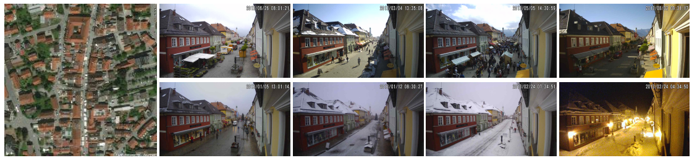

Learning a Dynamic Map of Visual Appearance

Abstract:
The appearance of the world varies dramatically not only from place to place but also from hour to hour and month to month. Every day billions of images capture this complex relationship, many of which are associated with precise time and location metadata. We propose to use these images to construct a global-scale, dynamic map of visual appearance attributes. Such a map enables fine-grained understanding of the expected appearance at any geographic location and time. Our approach integrates dense overhead imagery with location and time metadata into a general framework capable of mapping a wide variety of visual attributes. A key feature of our approach is that it requires no manual data annotation. We demonstrate how this approach can support various applications, including image-driven mapping, image geolocalization, and metadata verification.
People:
Highlights:
- Learning a Shared Feature Space
We propose a convolutional neural network (CNN) architecture that relates sounds with
co-located ground, and overhead images. Using the trained model,
We extract the output distribution over scene categories and identify the closest sounds
in CVS and the closest ground-level images in CVUSA, using
KL-divergence. Several qualitative examples are shown in the figure on the right,
also the video above have more results.

We assign each sound to a unique cluster and treat the cluster assignment, ci, as the label of a given location, li. For each location, we obtain the co-located overhead image, I(li) and train a CNN to predict the sound cluster, ci, from the image as shown in the right figure.- Predicting Sound Clusters from Overhead Imagery

Using the trained CNN model to predict a distribution over sound clusters from an overhead image enables us to construct sound maps at various spatial scales.- Visualizing An Aural Atlas
Block Level: For every pixel in the image on the right image of the top row, we downloaded the correspond- ing overhead image and used our network to predict the distribution over sound clusters. We show the results of our approach in the right column, as a per-pixel labeling where the color represents the most likely sound cluster (e.g., blue = water-related sounds and orange = traffic sounds). The color coding is the same for the next two spatial scales.
City Level: Here we apply the same technique to a larger geographic area. The middle row in the right Figure shows the aural atlas for a portion of New York City. Note how the majority of the urban areas are colored orange and the water areas are dark blue.
Country Level: We demonstrate the results of our method at the country level. We used 500,000 overhead images randomly sampled from the CVUSA dataset and extracted the sound cluster prediction with our trained model. the bottom row in the right figure shows the results over USA.

Related Papers
- A Multimodal Approach to Mapping Soundscapes (Tawfiq Salem, Menghua Zhai, Scott Workman, Nathan Jacobs), In: IEEE International Geoscience and Remote Sensing Symposium (IGARSS), 2018.
Bibtex:
@inproceedings{salem2018soundscape,
author = {Salem, Tawfiq and Zhai, Menghua and Workman, Scott and Jacobs, Nathan},
title = {A Multimodal Approach to Mapping Soundscapes},
year = {2018},
booktitle = {IEEE International Geoscience and Remote Sensing Symposium (IGARSS)},
}